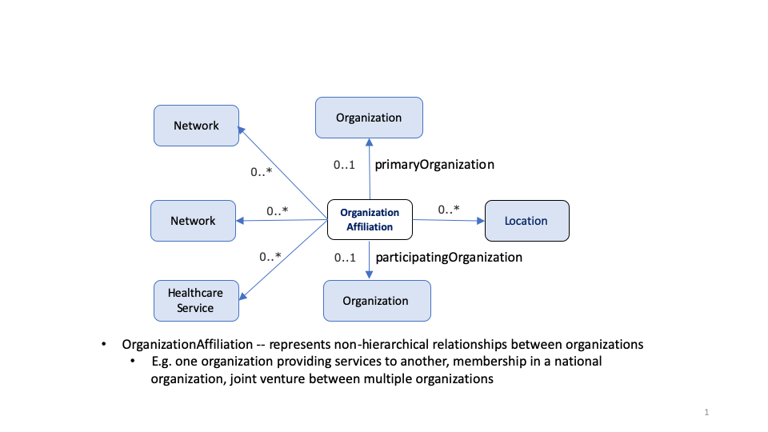
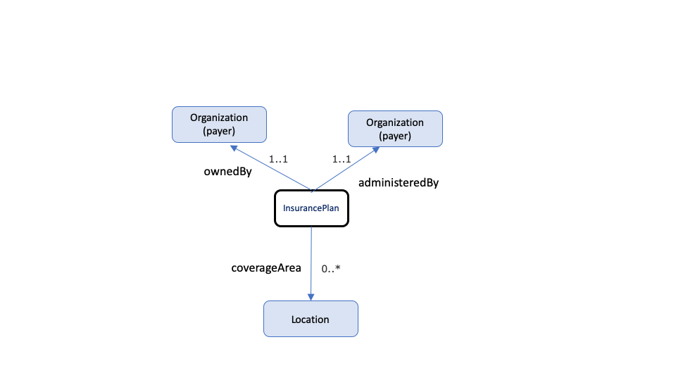

Payer Directory Implementation Guide
Home Page
Introduction
The Payer Directory Implementation Guide (Provider Directory IG) is based on FHIR R4.0. It was developed in cooperation with the Da Vinci Project and the the Office of the National Coordinator for Health Information Technology (ONC) with guidance from HL7 International, the Patient Administration Workgroup, and the HL7 US Realm Steering Committee.
It describes the architectural considerations for a payer to share their provider directory. We have strived to make this guide as broadly applicable as possible. However, every implementation may not use all of the content in this guide. It serves as a “standard” for the exchange of provider data, while describing additional data elements and capabilities that support more robust implementations.
For more information on the history of Payer Directory see the Payer Directory change notes.
Payer Directory Profiles
The list of Payer Directory Profiles is shown below. Each profile defines the minimum mandatory elements, extensions and terminology requirements that SHALL be present. For each profile, requirements and guidance are given in a simple narrative summary. A formal hierarchical table that presents a logical view of the content in both a differential and snapshot view is also provided along with references to appropriate terminologies and examples. In addition, each profile has a “Quick Start” section which is intended as an implementer friendly overview of the required search and read operations.
Payer Directory Conformance Requirements
The Capability Statements Section outlines conformance requirements for Payer Directory Servers and Client applications, identifying the specific profiles, RESTful operations and search parameters that need to be supported.
Note: The individual Payer Directory profiles identify the structural constraints, terminology bindings and invariants, however, implementers must refer to the conformance requirements for details on the RESTful operations, specific profiles and the search parameters applicable to each of the Payer Directory actors.
Primary Authors: Dan Chaput, Alex Kontur, Brian Postlethwaite, Bob Dieterle
Payer Directory - CI build (v0.0.1). See the Directory of published versions
General Guidance and Background Information
Contents
Background
Provider directories play a critical role in enabling identification of individual providers and provider organizations, as well as characteristics about them. Provider directories support a variety of use cases, including:
Relation to US Core and other IGs
This implementation guide was written for a US audience. We expect different jurisdictions considering implementing a provider directory will design their implementations in accordance with jurisdictional requirements, such as national profiles/IGs. In the United States, for example, we align with the R4 version of the US Core IG.
The Payer Directory Data Model
To determine which resources to profile, extensions to create, etc. we reviewed a number of use cases. The following are relevant to this implementation guide:
Overview of Payer Directory - Resource Relationships
Note: the following diagrams provide a high-level view of the relationships between resources used in this IG. They do not necessarily reflect all of the relationships/references between resources.
Practitioner
A practitioner is a person who is directly or indirectly involved in the provisioning of healthcare.
Practitioner Role
PractionerRole describes the relationship between a practitioner and an organization. A practitioner provides services to the organization at a location. Practitioners also participate in healthcare provider insurance networks through their role at an organization.
Figure 1: PractionerRole

Organization Affiliation
Similar to PractitionerRole, OrganizationAffiliation describes relationships between organizations. For example: 1) the relationship between an organization and an association it is a member of (e.g. hospitals in a hospital association), 2) an organization that provides services to another organization, such as an organization contracted to provide mental health care for another organization as part of a healthcare provider insurance network, and 3) distinct organizations forming a partnership to provide services (e.g. a cancer center).
Figure 2: OrganizationAffiliation

Network / Insurance Plan
A network is a group of practitioners and organizations that provide healthcare services for individuals enrolled in a health insurance product/plan (typically on behalf of a payer).
Figure 3: Network / Insurance Plan
Technical Guidance for Provider Directory Implementations
Contents
Provider Directory Concept Diagram
This diagram depicts the high-level conceptual design of a central source of Payer’s provider directory data.
Figure 1: Provider Directory Diagram
Exchange
The primary focus of this implementation guide is a RESTful API for obtaining data from a Payer Directory. The exchange API only supports a one-directional flow of information from a Payer Directory into local environments (i.e. HTTP GETs).
Any Payer Directory IG conformant implementation:
In profiles, the “Must Support” flag indicates if data exists for the specific property, then it must be represented as defined in the Provider Directory IG. If the element is not available from a system, this is not required, and may be omitted.
Conceptually, this guide was written to describe the flow of information from a Payer’s provider directory to third party application.
Provider directories may contain a large amount of data that will not be relevant to all use cases or third party application needs. Therefore, the exchange API defines a number of search parameters to enable users to express the scope of a subset of data they care to access. For example, implementations are required to support searches for Organizations based on address, name/alias, and relationship to a parent organization. In general, parameters for selecting resources based on a business identifier, status, type, or relationship (i.e. reference) are required for all implementations. Most parameters may be used in combination with other parameters and support more “advanced” capabilities like modifiers and chains.
The Provider Directory API currently supports one method for accessing directory data, a real-time RESTful Get. However, applications may need other capabilities to support different business needs. For instance, applications may need access to large amounts of Provider Directory data in a single session to either initially seed or refresh their local data repositories. Depending on the scope of data an application is trying to access, a real-time pull may not be the most effective method for acquiring large data sets. The FHIR specification provides support for asynchronous interactions, which may be necessary for implementers to facilitate processing of large amounts of data.
Bulk Data and Subscriptions
Background
Bulk data is a recent addition to the FHIR related specifications and has many uses. Primarily its for out of band data extraction for distribution.
There are several basic parts to FHIR’s bulk data extract
(The items marked with * can be considered quite mature, and unlikely to change from this point)
The bulk data had been balloted and was still being reconciled and at the time of publication of this guide, the current development version can be found here:
http://hl7.org/fhir/us/bulkdata/2019May/index.html
The community discussions and questions around this draft specification are here:
https://chat.fhir.org/#narrow/stream/179250-bulk-data
Healthcare Directory Bulk Data Specifics
The scope of the data selection
For the directory bulk data extraction, to request an entire copy of all content in the directory, the scope selection can be defined at the top level, and just specifying that we would like to retrieve all content for the specified resource types from the base of the FHIR server.
GET [base]/$export?_type=Organization,Location,Practitioner,PractitionerRole,HealthcareService, ...
A healthcare directory may curate such an extract on a nightly process, and just return this without needing to scan the live system, and the value returned in the transactionTime in the result should contain the timestamp at which this was generated (including timezone information), and that may be used in a subsequent call to retrieve changes since this point in time.
Once a system has a complete set of data, it is usually more efficient to ask for changes since a point in time, in which case the request should use the value above (transactionTime) to update the local directory.
GET [base]/$export?_type=Organization,Location,Practitioner, ... &_since=[transactionTime]
This behaves just the same as the initial request, with the exception of the content.
We would expect that this is more likely to return the current information, rather than from a pre-generated snapshot, as the transactionTime could be anything.
Format of the bulk data extract
The bulk extract format is always an nd-json file (new-line delimited json), and each file can only contain 1 resource type in it, but can be spread across multiple files, with either a size limit or count limit imposed by the extracting system, not the requestor.
The list of these files will be returned in the Complete status output, as described in the standard Bulk Data documentation.
Starting the extract
There are 2 options for starting the extract, one that is a single operation specifying all the content, and the other to be for a specific type only.
Here we will only document the use of the global export, as an initial request.
The initial request:
GET [base]/$export?_type=Organization,Location,Practitioner,PractitionerRole,HealthcareService
with headers:
Accept: application/fhir+json</code> Authentication: Bearer [bearer token]</code> Prefer: respond-async</code>
This will return either:
Example Content-Location: http://example.org/status-tracking/request-123 (note that this is not necessarily a FHIR endpoint, and isn’t a true FHIR resource)
Tracking the status of the extract
After a bulk data request has been started, the client MAY poll the URI provided in the Content-Location header.
GET http://example.org/status-tracking/request-123
This will return:
Refer to the build data specification for details of the completion event:
https://github.com/smart-on-fhir/fhir-bulk-data-docs/blob/master/export.md#response—complete-status
{ "transactionTime": "[instant]", "request": "[base]/$export?_type=Organization,Location,Practitioner,PractitionerRole,HealthcareService", "requiresAccessToken": true, "output": [ { "type": "Practitioner", "url": "http://serverpath2/practitioner_file_1.ndjson", "count": 10000 }, { "type": "Practitioner", "url": "http://serverpath2/practitioner_file_2.ndjson", "count": 3017 }, { "type": "Location", "url": "http://serverpath2/location_file_1.ndjson", "count": 4182 } ], // Note that this deletions property is a proposal, not part of the bulk data spec. "deletions": [ { "type": "PractitionerRole", "url": "http://serverpath2/practitionerrole_deletions_1.ndjson", // the bundle will include the total number of deletions in the file "count": 23 // this is the number of bundles in the file, not the number of resources deleted } ], "error": [ { "type": "OperationOutcome", "url": "http://serverpath2/err_file_1.ndjson", "count": 439 } ] }
Retrieving the complete extract
Once the tracking of the extract returns a 200 OK completed status, the body of the result will include the list of prepared files that you can download.
Then each of these URLs can be downloaded by a simple get, ensuring to pass the Bearer token if the result indicates requiresAccessToken = true
While downloading, also recommend including the header Accept-Encoding: gzip to compress the content as it comes down.
GET http://serverpath2/location_file_1.ndjson
Finishing the extract
This is the simplest part of the process, and that is just calling DELETE on the status tracking URL.
DELETE http://example.org/status-tracking/request-123
This then tells the server that we are all finished with the data, and it can be deleted/cleaned up. The server may also include some time based limits where it may only keep it for a set period of time before it automatically cleans it up.
Resource Profiles and Extensions
Profiles
The following profiles set the minimum expectations to search and retrieve validated directory data associated with healthcare entities:
Extensions
The following extensions are used in the above profiles:
Click to return on the top page
Terminology defined for the Payer Directory Implementation Guide
This page lists the ValueSets, CodeSystems, and ConceptMaps defined as part of the Payer Directory implementation Guide. For more information on using codes in resources, see the the FHIR specification.
Value Sets
Code Systems
See the FHIR terminology section for a complete discussion on code systems and a list of codes system names used in FHIR. The following additional names (URIs) have been identified for this implementation guide, If a URI is listed here, it SHALL be used in the Payer Directory profiles in preference to any other code system name.
Code systems published in this IG - Includes Payer Directory defined code systems and externally defined code systems.
ConceptMaps defined as part of the Payer Directory Implementation Guide
Operations and Search Parameters
The following search parameters have been defined for the Payer Directory Implementation Guide. For more information on the FHIR RESTful search api and the standard Search Param Registry see the FHIR specification.
Search Parameter
Endpoint
HealthcareService
Location
Organization
Network
OrganizationAffiliation
Practitioner
PractitionerRole
InsurancePlan
Provider_Directory_server
This Capability Statement defines the expected capabilities of a Payer directory FHIR server conforming to the Payer Directory Implementation Guide.
|
Mode |
SERVER |
|
Description |
|
|
Transaction |
|
|
System History |
|
|
System Search |
y |
|
Resource Type |
Profile |
Read |
V-Read |
Search |
|
Practitioner |
http://hl7.org/fhir/uv/vhdir/StructureDefinition/vhdir-practitioner |
y |
y |
y |
|
PractitionerRole |
http://hl7.org/fhir/uv/vhdir/StructureDefinition/vhdir-practitionerrole |
y |
y |
y |
|
Organization |
y |
y |
y |
|
|
OrganizationAffiliation |
http://hl7.org/fhir/uv/vhdir/StructureDefinition/vhdir-organizationaffiliation |
y |
y |
y |
|
HealthcareService |
http://hl7.org/fhir/uv/vhdir/StructureDefinition/vhdir-healthcareservice |
y |
y |
y |
|
Location |
http://hl7.org/fhir/uv/vhdir/StructureDefinition/vhdir-location |
y |
y |
y |
|
Endpoint |
y |
y |
y |
|
|
InsurancePlan |
http://hl7.org/fhir/uv/vhdir/StructureDefinition/vhdir-insuranceplan |
y |
y |
y |
General Security Considerations
The following are the Provider Directory security considerations that implementers should follow:
The following are security conformance requirements for Provider Directory actors:
Examples
Available for download here
Notes: